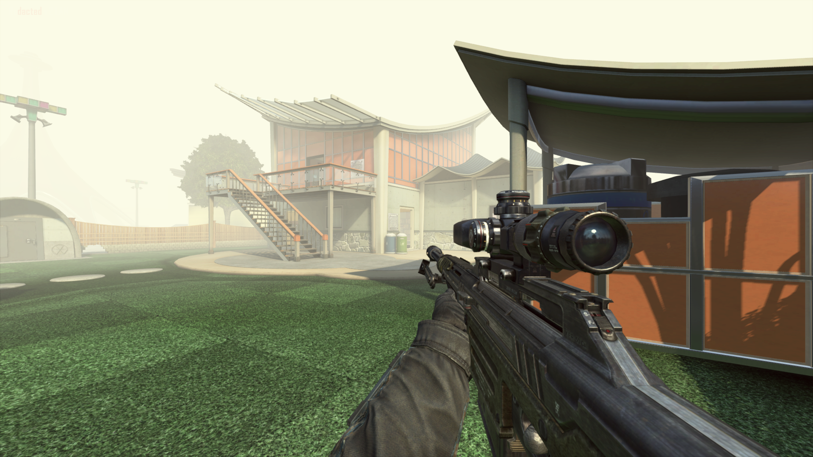
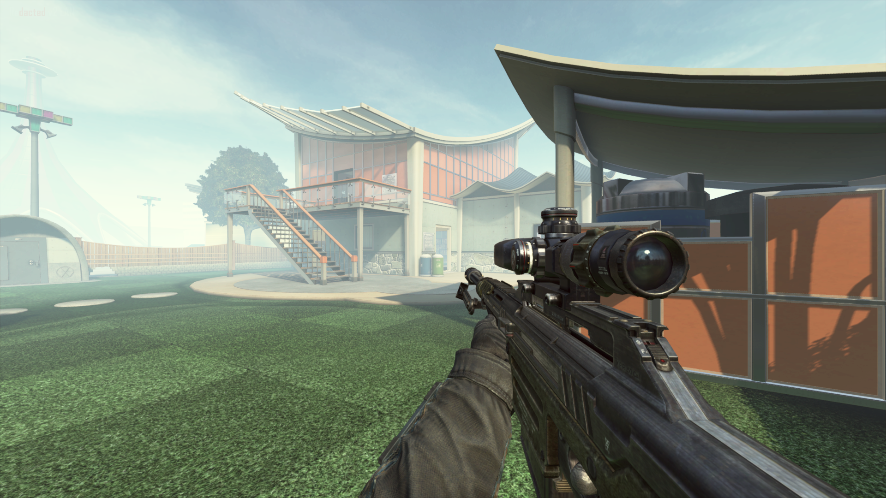
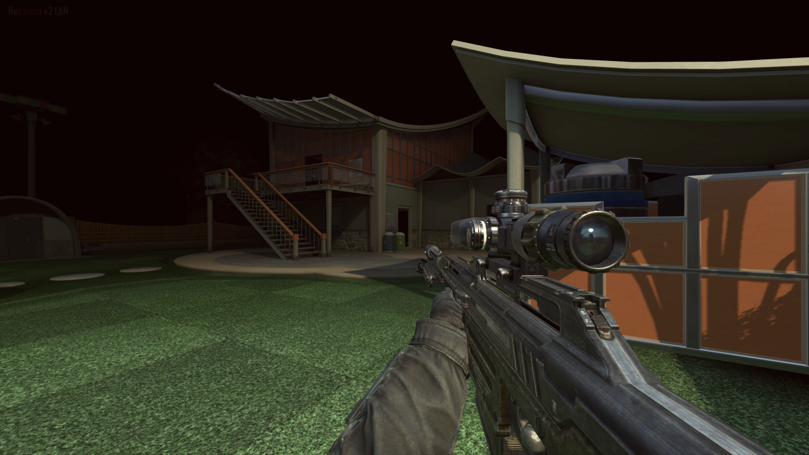
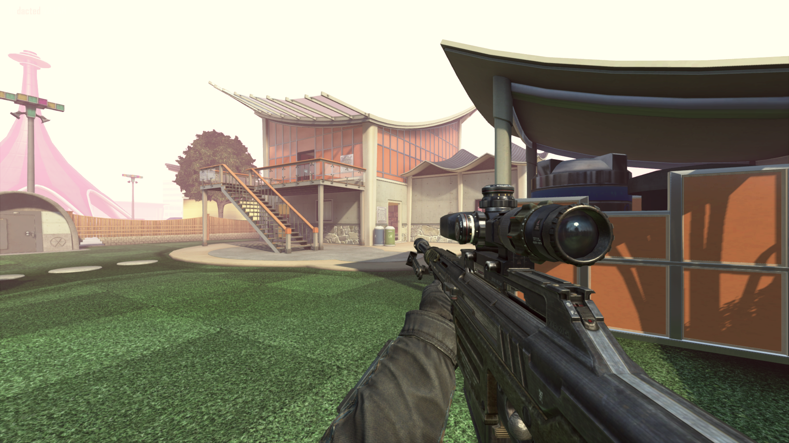
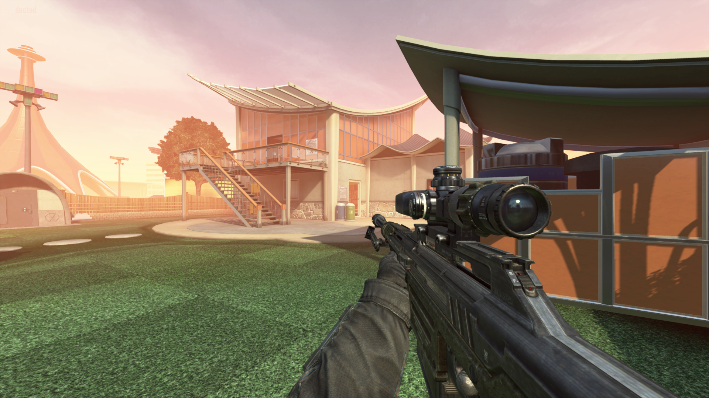
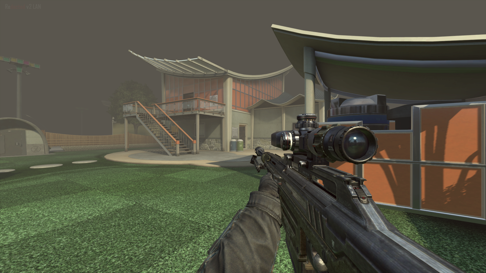

BO2 Steam/Redacted Fog mod
This mod requires Cheat Engine
Credits:
Gmzorz - Addresses
Azsry - Fixes
Digital Citizen - Depthmap
Amyst - Steam fix
Cfgfactory post

Using the fog mod, you can customize the ingame Bo2 dof using a simple Cheat Engine table.
This includes Start distance, Fade distance, Height, Bias, Color and Exposure.
Usage:
Open the Table using Cheat Engine, if you have CE installed simply double click the .CT file.
Hook it to the process (press the button below the 'file' menu).
The Table includes 8 Numeric keybinds, each has its own 'fog preset', simply press the button and it'll switch to the preset.
(sometimes you may need to press play to get it to work)
STEAM USERS: BEFORE USING THE TABLE, KNOW THIS:
# Only use this method in theater mode. (private match is safe, but only if you keep it private, if you let someone join you, a VAC/TAC ban might be given).
# Always restart the game if you're done using cheat engine, just closing cheat engine is not enough!
Presets:
|
 |
 |
 |
| NUM1 |
NUM2 |
NUM3 |
NUM4 |
| Foggy Day |
Aqua |
Pitch Black |
Denpa |
|  |
 |
 |
|
| NUM5 |
NUM6 |
NUM7 |
NUM8 |
| Fire |
Smog |
Depth map |
Resets fog |
Making a depth matte using the fog mod
*requires a working bo2 console (check: BO2/Redacted Resources page).
Open the z_fog.CT file using cheat engine and hook it to the bo2 process
Press NUM7 to set the depth fog. Then move on to your preferred console and execute this config.
To disable the depthmatte, press NUM8 and execute this config
you might have to press the play or play back button ingame in order to reset the fog
Footer note: the fog mod was originally founded by Gmzorz and Azsry
the depth config/settings was made/found by Digital Citizen
old fog mod


{kind=link}
{kind=link}
{kind=link}
{kind=link}
{kind=link}
{kind=link}